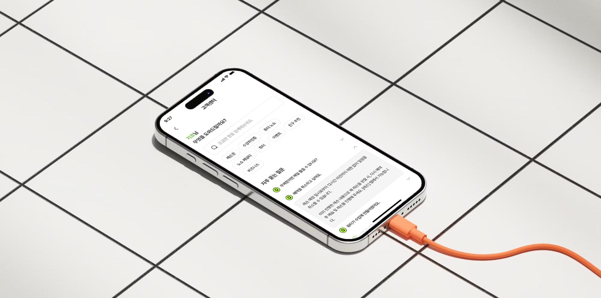
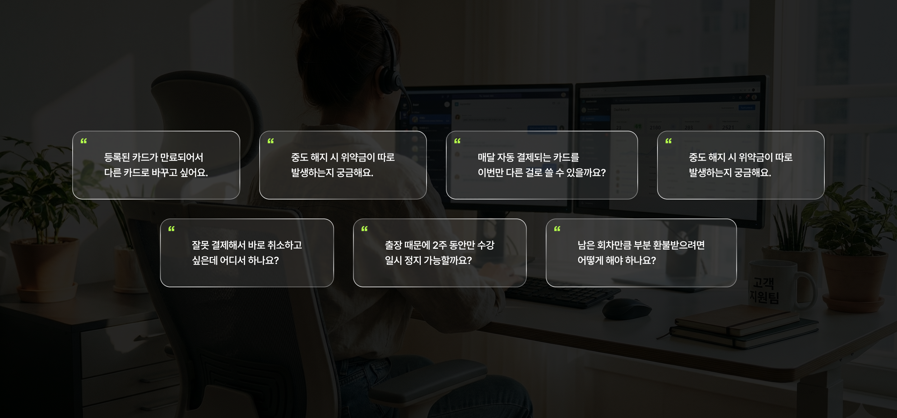
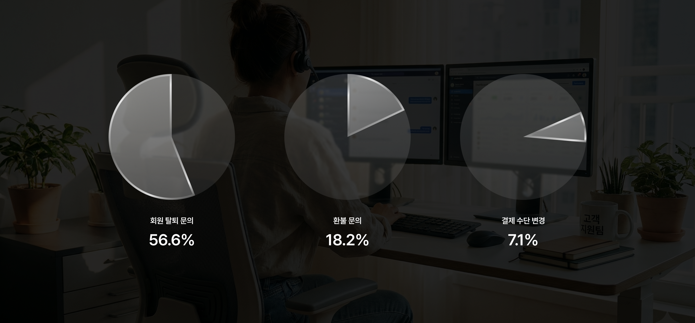
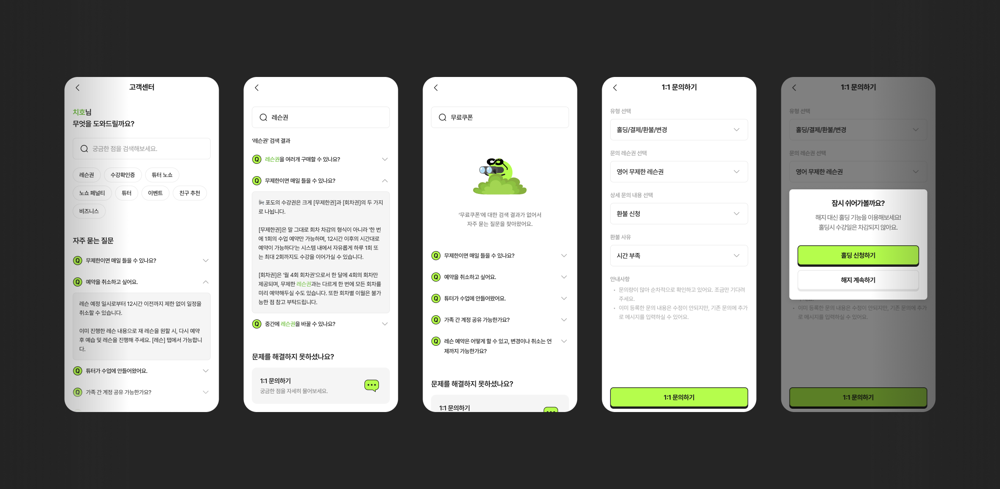
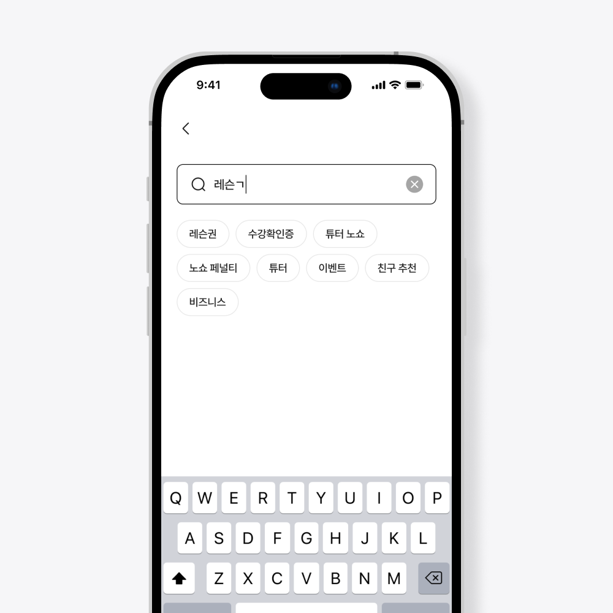
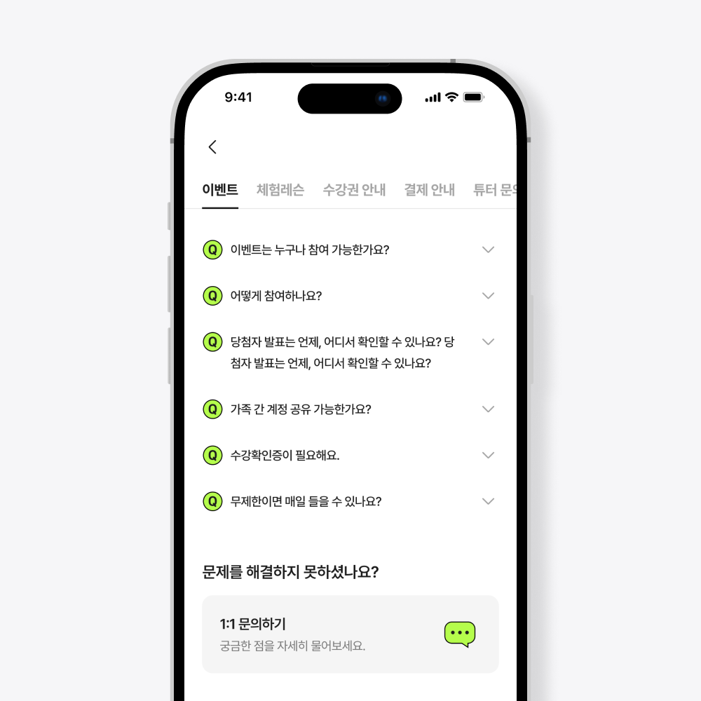
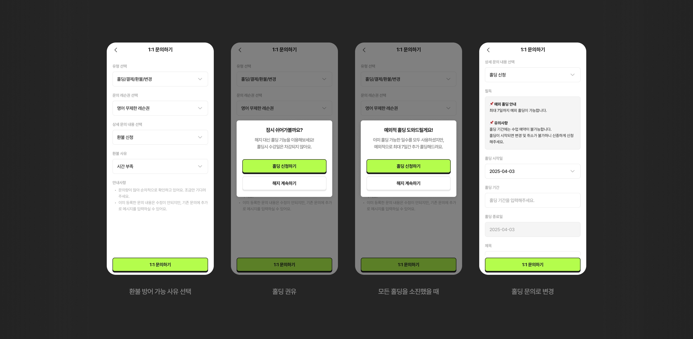
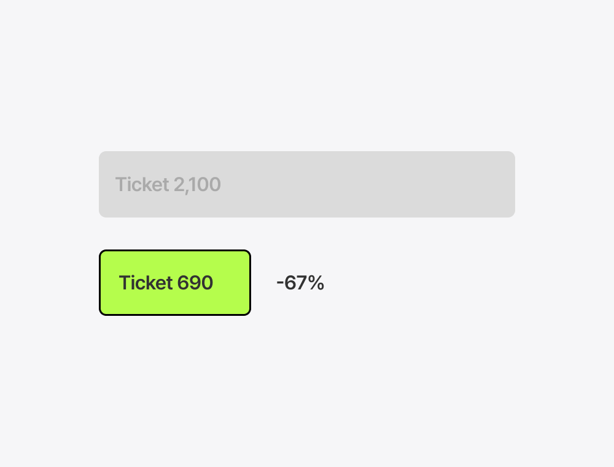
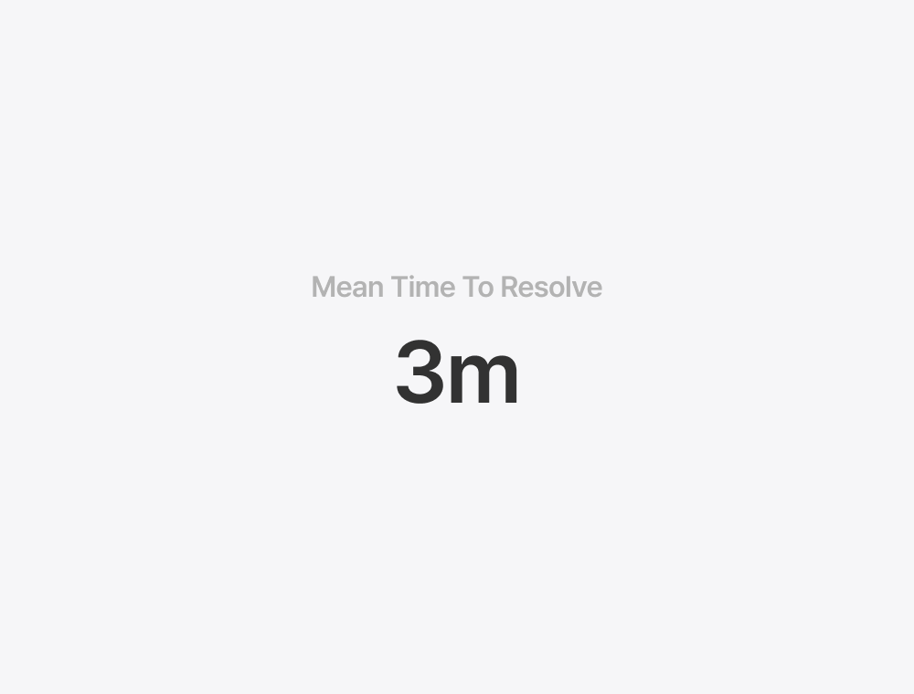

PODO CS 운영 자동화
PODO는 AI 기반 영어 학습 플랫폼으로, 사용자 급증에 따라 기존 카카오톡 중심의 CS 운영이 한계에 도달했습니다. 모든 문의가 카카오톡 채널로 집중되어 평균 응답 시간이 2시간 이상 소요되었고, 전체 문의의 85%가 환불, 결제 변경, 홀딩 등 반복적인 내용이었습니다. 사용자가 앱 안에서 즉시 문제를 해결하고, 운영팀은 더 중요한 업무에 집중하게 만드는 인앱 고객센터 자동화 시스템을 구축한 프로젝트입니다.

카카오톡으로는 한계가 있었다
사용자가 급증하면서 기존 카카오톡 채널로 하루 평균 100건 이상의 문의가 쏟아졌습니다. 운영팀은 실시간 대응이 불가능했고, 사용자는 최소 2시간 이상 기다려야 했죠. 데이터를 분석해 보니 패턴이 보였습니다.
전체 문의의 85%가 환불, 결제 변경, 홀딩 등 표준화된 프로세스였고, 이는 모두 자동화할 수 있었습니다.
"사용자는 즉시 답을 원하는데, 왜 기다리게 할까?"
그래서 인앱 고객센터 자동화 시스템을 구축하기로 했습니다.

즉각적인 해결, 직관적인 경험
1. 검색 우선 인터페이스: 대부분의 사용자가 명확한 질문을 가지고 진입하기 때문에, 검색 바를 최상단에 배치하고 인기 검색어 태그로 원클릭 접근을 가능하게 했습니다. 카테고리를 탐색하는 것보다 검색이 빠르고 해결률도 높았습니다.
2. 자동 처리 플로우: 환불, 결제 변경, 수강 홀딩 등 반복적인 요청은 사용자가 직접 처리할 수 있는 셀프 플로우를 구축했습니다. 각 단계마다 현재 상태, 다음 동작, 예상 결과를 명확하게 표시하여 중도 이탈을 줄였습니다.
3. FAQ 시스템: 자주 묻는 질문을 카테고리별로 정리하고, 아코디언 UI로 같은 화면에서 여러 질문을 탐색할 수 있게 했습니다.
4. 대안 제시: 검색 결과가 없을 때도 유사한 FAQ를 추천하여 이탈을 방지했습니다. 그래도 해결되지 않으면 즉시 1:1 문의로 연결되도록 설계했습니다.

사용자 여정을 4가지 시나리오로 설계
사용자 여정을 4가지로 정의하고, 각 여정에 맞는 동선을 설계했습니다.
1. 검색형: 검색 바 → 자동완성 → FAQ 답변 확인
2. 탐색형: 카테고리 선택 → 질문 목록 → FAQ 답변 확인
3. 자동 처리형: 1:1 문의 진입 → 환불·홀딩·결제변경 등 요청 → 자동 처리
4. 상담 연결형: 1:1 문의 진입 → 오류·건의 등 → 채팅 상담


헬스장에서 찾은 답
환불 플로우를 설계하면서 환불 사유 데이터를 분석했습니다. 대부분의 사유는 "학습 시간이 부족하다"였고, 환불 신청자의 월 평균 수업 횟수는 4회 미만이었습니다. 가입은 하지만 잘 안 가고, 안 가니까 끊는 구조. 헬스장과 똑같은 패턴이었습니다.
그래서 헬스장의 홀딩(일시정지) 시스템을 차용했습니다. 환불 플로우 중간에 완전한 환불 대신 수강권 홀딩을 먼저 제안하는 단계를 넣었습니다. 시간이 부족해서 못 다닌 유저에게 "끊을 필요 없이 잠시 멈춰두세요"라는 선택지를 준 것입니다.
환불은 유저와 매출 모두를 잃지만, 홀딩은 유저를 붙잡아둡니다. 가장 효과적인 방어는 최종 위약금 안내였지만, 홀딩 단계에서도 환불 신청자의 12%를 방어할 수 있었습니다.

설계 판단들
1. 아코디언 UI vs 별도 페이지
FAQ는 사용자가 여러 질문을 빠르게 스캔하는 패턴이 있어, 페이지 이동 없이 같은 화면에서 열어보는 아코디언 방식을 선택했습니다. 반면 환불이나 결제 변경 같은 중요한 액션은 실수 방지를 위해 별도 페이지로 분리했습니다. 행동의 무게에 따라 UI를 다르게 가져간 것입니다.
2. 빈 검색 결과를 이탈 방지 기회로
검색 결과가 없을 때 단순히 "결과 없음"만 보여주면 사용자가 바로 이탈합니다. 대신 유사한 FAQ나 인기 FAQ를 추천하여, 검색 실패가 곧 이탈로 이어지지 않도록 설계했습니다.
즉각적인 해결이 만든 변화
출시 후 카카오톡 채널로 유입되는 CS 문의가 67% 감소했습니다. 평균 해결 시간은 2시간에서 3분으로 단축되었고, 환불→홀딩 전환 설계를 통해 수강권 환불이 22% 감소했습니다.
운영팀이 하루종일 카카오톡 답변을 달던 시간이 사라졌고, 그 시간에 복잡한 케이스 대응과 서비스 개선을 할 수 있게 됐습니다.

